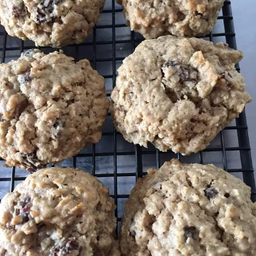

Oatmeal Raisin Cookies

Description
Very moist (don't cook them too long), very rich in flavor, yet somehow not too heavy. Grandma's recipe! Even people who don't like oatmeal raisin cookies do like these.
Ingredients
- 2 cups shortening
- 2 cups brown sugar
- 1/2 cup white sugar
- 4 eggs
- 2 teaspoons vanilla extract
- 4 cups all-purpose flour
- 1 1/2 teaspoons baking soda
- 1 teaspoon salt
- 2 teaspoons ground cinnamon
- 1 teaspoon ground allspice
- 1 teaspoon ground cloves
- 6 cups rolled oats
- 1 cup milk
- 2 cups raisins
Steps
- Preheat oven to 350 degrees F (175 degrees C). Grease cookie sheets.
- In a large bowl, cream together the shortening, brown sugar and white sugar until smooth. Beat in the eggs one at a time, then stir in the vanilla. Combine the flour, baking soda, salt, cinnamon, allspice and cloves; stir into the sugar mixture until well blended. Mix in the rolled oats alternately with the milk. Finally, stir in the raisins. Drop by heaping spoonfuls 3 inches apart onto the prepared cookie sheets.
- Bake in the preheated oven for 10 to 11 minutes, or until edges are golden and tops are dry. Cool on cookie sheets for 1 minute before removing to cool on wire racks.